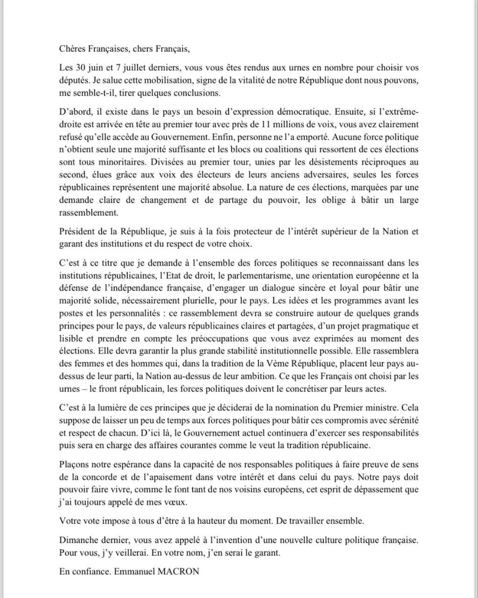

Publication d’archives
La lettre de Macron 😡
Date indiquée par Facebook · 11 juillet 2024
Texte conservé avec la publication
Contexte du dossier
Le 11 juillet, le compte critique la lettre présidentielle et défend la vocation du Nouveau Front populaire à gouverner. Les entrées portant des mises à jour des 13 et 14 juillet conservent l’appel du PCF à des états généraux et l’annonce de la décision d’Huguette Bello de décliner la proposition de nomination. Le 17 juillet, la page relaie le communiqué des organisations du NFP appelant à rejoindre le rassemblement prévu par la CGT et la FSU le lendemain à Niort. En août, elle diffuse la lettre aux Français « Nous sommes prêts », présentée comme commune à Lucie Castets et aux dirigeants des partis de la coalition. Ces pièces suivent une même question après le scrutin, celle du passage des résultats aux décisions.

Sources
Archive rouge · export Facebook · AR-0002-FB-01324
À lire aussi · Ainsi parlent et écrivent des candidats du RN.